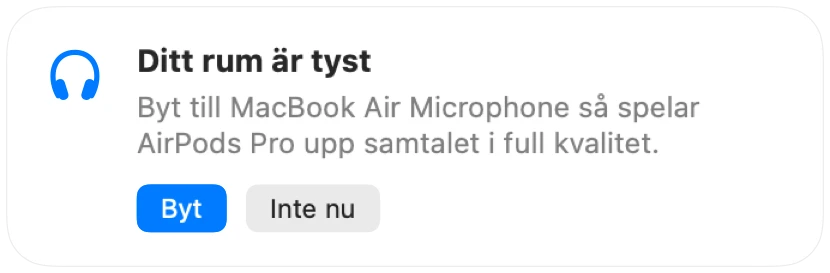

Varför AirPods låter sämre under samtal på en Mac
Gå med i ett möte med AirPods och ljudet blir plötsligt platt och burkigt. Det är inget fel. När en app använder mikrofonen i AirPods växlar Bluetooth dina AirPods till ett samtalsläge som spelar upp allt i mycket lägre kvalitet.
Lösningen är att prata i din Macs mikrofon och låta dina AirPods enbart spela upp ljud. I ett tyst rum låter din Macs mikrofon lika bra, och samtalet spelas upp i full kvalitet igen. Muffle märker när ditt rum är tyst och föreslår bytet.
Behåll full kvalitet i samtal
- 1
Installera Muffle och låt ”Föreslå bästa mikrofonen för rummet” vara aktiverat.
- 2
Gå med i ditt samtal med AirPods som vanligt.
- 3
När Muffle visar att ditt rum är tyst klickar du på Byt.
- 4
Om det blir bullrigt senare föreslår Muffle mikrofonen i AirPods igen.

- Bytet fungerar när din samtalsapp använder systemets förvalda mikrofon. I Google Meet, Zoom och Teams väljer du alternativet för standard eller samma som systemet.
- Håll dig nära din Mac medan du använder dess mikrofon. Muffle föreslår den bara när den kan höra dig tydligt.
Frågor
Varför låter AirPods dåligt under samtal på Mac?
Bluetooth kan inte överföra stereoljud i hög kvalitet och din röst samtidigt. Därför växlar AirPods till samtalsläge så länge deras mikrofon används.
Byter Muffle mikrofon av sig själv?
Nej. Muffle föreslår bara den bättre mikrofonen. Inget ändras förrän du klickar på Byt.